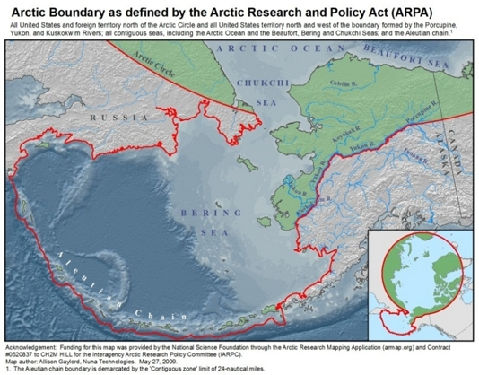
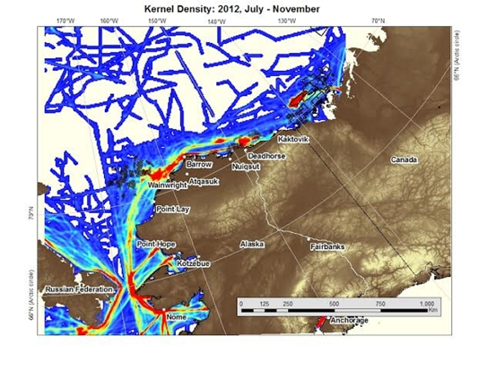

U.S. ARCTIC MARINE TRANSPORTATION INTEGRATED ACTION TEAM
"The Arctic States hold a responsibility to safeguard the future development of the region and to develop models for stewardship of the marine environment. This requires both a better understanding of the drivers and effects altering the Arctic marine environment and enhanced cooperation amongst the Arctic States, local inhabitants, external actors and international legal frameworks." The Arctic Council

Purpose
The CMTS, through the work of the integrated action team (IAT), has responded to the call of Congress and the White House to coordinate domestic transportation policies and determine what is needed to improve the U.S. Arctic marine transportation system (MTS). Through its recommendations and member agency actions, maritime transportation in the U.S. Arctic will be better managed and made more safe and secure, resulting in more efficient transits, greater protection of Arctic coastal and ocean resources, maintenance of subsistence uses by native communities, and less risk to loss of cargo and life.
Value
Warming conditions and reduction in the extent of sea ice cover in the Arctic are creating new opportunities and challenges in the U.S. Arctic region with respect to marine transportation. Ensuring a safe and efficient U.S. MTS in the Arctic is essential to meeting the nation's environmental, economic development and national security objectives.
Integrated Action Team Leads
- U.S. Coast Guard
- U.S. Maritime Administration
- National Oceanic and Atmospheric Administration
Participating Agencies
- Bureau of Ocean Energy Management
- Bureau of Safety and Environmental Enforcement
- Environmental Protection Administration
- Federal Aviation Administration
- National Geospatial-Intelligence Agency
- National Oceanic and Atmospheric Administration
- National Maritime Intelligence-Integration Office
- Oceanographer of the Navy
- Office of Naval Intelligence
- Office of Science and Technology Policy
- Office of the Secretary of Transportation
- U.S. Arctic Research Commission
- U.S. Army Corps of Engineers
- U.S. Coast Guard
- U.S. Department of Energy
- U.S. Department of State
- U.S. Department of the Treasury
- U.S. Maritime Administration
- U.S. Transportation Command
Areas of Focus
- Navigable Waterways
- Physical and Information Infrastructure
- Vessel Operations and Response Services
- The Human Element and U.S. Arctic Communities
Activity and Milestones
-
March 2022. Published a U.S. Arctic MTS Infrastructure Risk Resource Compendium:
- The U.S. Arctic Marine Transportation System Infrastructure Risk Resource Compendium https://rosap.ntl.bts.gov/view/dot/62311 is a list of literature related to the identification, analysis and mitigation of risks derived from marine transportation system (MTS) infrastructure gaps in the U.S. Arctic compiled to aid and inform federal investment priorities and decisions in the region for the safety and security of the Arctic MTS. This report is in response to a recommendation to the U.S Committee on the Marine Transportation System (CMTS) by the Government Accountability Office in Report #GAO-20-460.
-
Issue Updated Arctic MTS Infrastructure Table
- Completed: The final report, The report, The 2021 U.S. Arctic Infrastructure Table Update (April 2021), an updated inventory of vital marine transportation system (MTS) components in the U.S. Arctic. This 2021 report includes over 40 substantial updates, changes, and additions to the original 2013 infrastructure table and last amendment in 2018.
-
Updating the Ten-Year Vessel Projection Report for the U.S. Arctic
- Completed: The final report, "A Ten-Year Projection of Maritime Activity in the U.S. Arctic Region, 2020—2030" was completed September 2019. The report details how future natural resource activities, commercial shipping, infrastructure development, oceanographic research, tourism, and ship construction may influence vessel traffic in the region over the next ten years. The Most Plausible Scenario estimates that 377 vessels could be in the region by 2030, representing a nearly 50% growth over current levels and over 200% growth from 2008 levels.
-
Revisiting Near-Term Recommendations to Prioritize Infrastructure Needs in the U.S. Arctic
- Completed: The report, Revisiting Near-Term Recommendations to Prioritize Infrastructure Needs in the U.S. Arctic reviews and provides updates on the 25 near-term recommendations provided by the 2016 report, A Ten-Year Prioritization of Infrastructure Needs in the U.S. Arctic. The report was completed in November 2018.
- Completed: The 'Current Status of MTS Infrastructure in the Arctic' Table, which was first created as part of the U.S. Arctic Marine Transportation System: Overview and Priorities for Action, 2013 was updated in November 2018 as an Appendix of the Revisiting Near-Term Recommendations to Prioritize Infrastructure Needs in the U.S. Arctic report scenarios.
-
A 10-Year Prioritization Framework
- Accomplished: The second milestone of the National Strategy for the Arctic Region (NSAR) Implementation Plan was completed in May 2016.
- Completed: The Ten-Year Prioritization of Infrastructure Needs in the U.S. Arctic report completed an assigned action under the National Strategy for the Arctic Region (NSAR) Implementation Plan. This report presents a framework to address Arctic infrastructure gaps. It identifies critical requirements for a safe and secure U.S. Arctic Marine Transportation System (MTS) to be implemented over the next decade. This report was signed by the Secretary of Transportation and transmitted to the White House in May 2016.
- Assigned: Develop by January 2016 recommendations for pursuing Federal public-private partnerships (P3) in support of the needs assessment and prioritized activities. The Arctic IAT will draw on P3 work developed by the MTS Infrastructure Investment IAT, including the compendium of Federal P3 authorities. This report has been framed.
- Accomplished: The third and final milestone of the NSAR Implementation Plan was completed in January 2017.
- Completed: The report, Recommendations and Criteria for Using Federal Public-Private Partnerships to Support Critical U.S. Arctic Maritime Infrastructure, completes the final assigned action under the NSAR Implementation Plan. This report puts forward 19 recommendations for the implementation of public-private partnerships (P3s) in developing, improving, and maintaining infrastructure in support of Federal maritime activities, national security, navigation safety, and stewardship of natural resources in the U.S. Arctic. The report was signed by the Secretary of Transportation and transmitted to the White House in January 2017.
-
U.S. Arctic Ten-Year Vessel Projection Report to the National Security Council

This report provides estimates on vessel traffic in the U.S. Arctic (numbers of vessels and transits) based on modeling of current baseline traffic data and growth potential as defined by various progression scenarios. It is the first step toward developing a framework to guide Federal activities related to the construction, maintenance, and improvement of ports and other infrastructure needed to preserve the mobility and safe navigation of U.S. military and civilian vessels throughout the Arctic region. - Assigned: CMTS was directed by Transportation Secretary and CMTS Chair Anthony Foxx to lead the development of the progression of vessel activity in the U.S. Arctic.
- Conducted: A webinar was sponsored by the CMTS for Arctic interests to obtain views on progression scenarios.
- Accomplished: The first milestone of the National Strategy for the Arctic Region (NSAR) Implementation Plan was completed on January 1, 2015.
- Completed: Submitted to the National Security Council on January 16, 2015, the 10-year Projection Study of Maritime Activity in the U.S. Arctic completed an assigned action under the National Strategy for the Arctic Region (NSAR) Implementation Plan. This report provides estimates on vessel traffic in the U.S. Arctic (numbers of vessels and transits) based on modeling of current baseline traffic data and growth potential as defined by various progression scenarios. It is the first step toward developing a framework to guide Federal activities related to the construction, maintenance, and improvement of ports and other infrastructure needed to preserve the mobility and safe navigation of U.S. military and civilian vessels throughout the U.S. Arctic region.
-
Report to the President, U.S. Arctic Marine Transportation System: Overview and Priorities for Action 2013
- Completed: The Arctic IAT completed an inventory of Federal activities related to marine transportation in the U.S. Arctic region. From this inventory, a framework for a U.S. Arctic MTS was developed.
- Completed: A gap analysis, which compares the U.S. Arctic MTS framework and its elements against current and planned Federal Arctic marine transportation activities, was completed.
- Completed: A peer review of the draft report, leading to the development of issue papers for each of the 16 U.S. Arctic MTS elements, was completed.
- Completed: A 45-day public comment period on the draft report was completed on April 22, 2013. Two moderated conference calls with general stakeholders and Alaskan Tribes were held during the public comment period.
- Completed: A second CMTS interagency review was completed to develop a final draft U.S. Arctic Marine Transportation Report for consideration by the CMTS Coordinating Board in June, 2013.
- Completed: CMTS Chair and Transportation Secretary Anthony Foxx approved the completed CMTS U.S. Arctic MTS Report and, on July 30, 2013, transmitted the report to President Obama for his consideration.
Reports and Resources
- A Ten-Year Projection of Maritime Activity in The U.S. Arctic region 2020 - 2030
- CMTS Recommendations and Criteria for Using Federal Public-Private Partnerships to Support Critical U.S. Arctic Maritime Infrastructure (2017) (Executive Summary)
- CMTS A Ten-Year Prioritization of Infrastructure Needs in the U.S. Arctic (2016) Executive Summary
- CMTS Ten-year Projection Study of Maritime Activity in the US Arctic (2015) Executive Summary
- CMTS Webinar on Federal Arctic MTS Activities
- CMTS Arctic MTS Report (2013)
- National Strategy for the Arctic Region (2013)
- Implementation Plan (2014)
- Implementation Report (2015)
- White House Directive on Arctic Region Policy (2009)
Related Files
- Recommendations And Criteria For Using Federal Public Private Partnerships To Support Critical U S Arctic Maritime Infrastructure
- 10 Year Projection Study Of Maritime Activity In The U S Arctic
- CMTS U S Arctic MTS Report
- CMTS Recommendations And Criteria For Using Federal Public Private Partnerships To Support Critical U S Arctic Maritime Infrastructure 2017
- CMTS Recommendations And Criteria Executive Summary
- CMTS A Ten Year Prioritization Of Infrastructure Needs In The U S Arctic 2016
- Ten Year Prioritization Of Infrastructure Executive Summary
- CMTS Ten Year Projection Study Of Maritime Activity In The US Arctic 2015
- Ten Year Projection Study Executive Summary
- Polar Code Brief
- Presentation Of 10 Year Projection Of Maritime Activity In The Arctic
- Arctic MTS Report Narrative
- Implementation Report 2015
- White House Directive On Arctic Region Policy 2009
- Revisiting Near Term Recommendations To Prioritize Infrastructure Needs In The U S Arctic
- 2021 U S Arctic Infrastructure Table Update